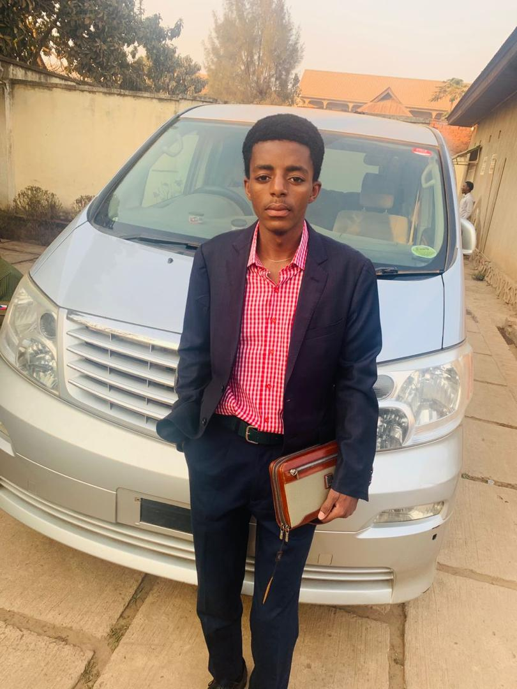

Je reponds au nom de GEORGES KAMUNDALA AMISI fils de Delphin kaboyi et Solange Mukobelwa, je suis né à kolwezi le 07/02/2002, je suis l'ainé d'une famille de trois garçons.
Je suis quelqu'un de très curieux, positif, gentil, généreux, parfois têtu, il y'a une citation qui dit: "la famille est sacré" ce pourquoi j'aime famille. Je déteste les mensonges et les hypocrites.
Etudes faites:
Ecole Maternelle (2005-2007) : 1ère et 2ème maternelle à twendeleye
Ecole Primaire (2008-2014) : A imara
Ecole secondaire (2014-2015) : A imara je repris et suis allé à saint sylvestre au golf plateau karavia
Ecole secondaire (2015-2020) : A saint sylvestre où j'ai obtenu mon diplome avec 64%